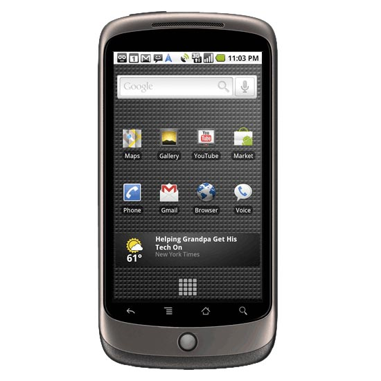
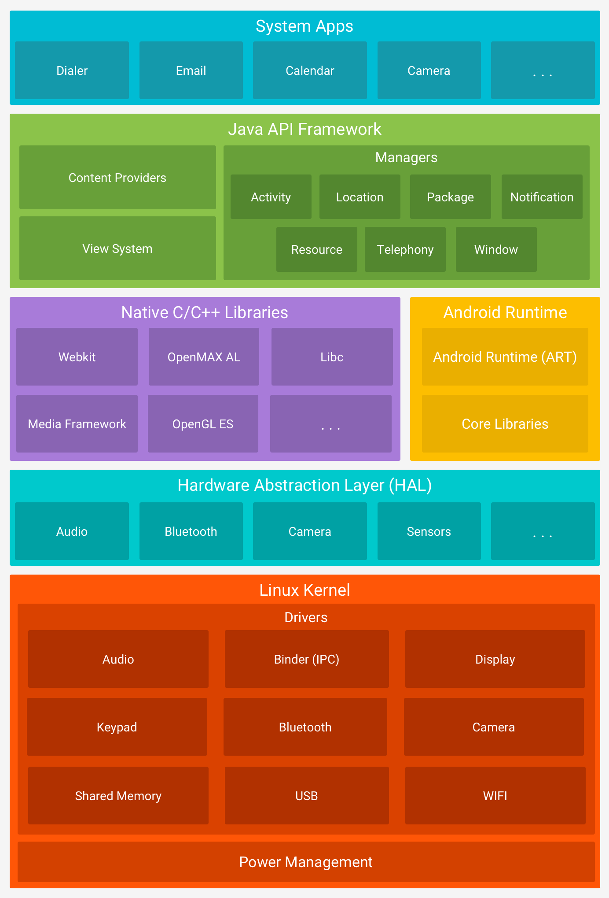
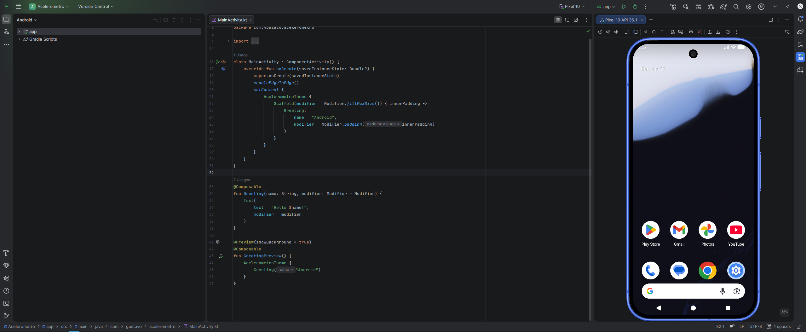

Prof. Me. Gustavo Ferreira Palma
Quem Sou eu?
Formação Acadêmica
- Técnico em Informática - Etec Waldyr Duron Júnior
- Tecnólogo em Análise e Desenvolvimento de Sistemas - FATEC Ourinhos
- Especialista Em Eletrônica Embarcada - UNISAL
- Mestre em Inteligência Computacional Aplicada - UTFPR
Experiência Profissional
- Analista de Tecnologia - Chiptronic Eletrônica do Brasil (2011-2019)
- Professor de Graduação - Eduvale Avaré (2017-2019)
- Analista de Desenvolvimento - Stoneridge Brasil (2019-2020)
- Consultor Tecnológico - Instituto de Pesquisas Eldorado (2020)
- Professor de Graduação e Pós-Graduação - UNISAL (2023)
O que Vamos Estudar?
- Desenvolvimento de Aplicaçoes Mobile
- Sistemas Operacionais Móveis
- Kit de Sensores nos dispositivos
- Câmera
- Mapas e GPS
- Conectividade
- Desenvolvimento de Aplicações Web
- Desenvolvimento Backend utilizando Spring
- Desenvolvimento de APIs para integração de sistemas
- Desenvolvimento de arquiteturas de sistemas desacopladoss
- Entre outros...
s
Métodos de Avaliação
- Majoritariamente avaliações práticas;
- Se/Quando Necessário, Avaliação escrita;
Combinados de Ouro
- Nosso Curso é PRESENCIAL, então para ter presença é preciso estar PRESENTE;
- Abono de Faltas, somente com atestado e casos previstos;
- Nossa Sala de Aula é um ambiente seguro, fiquem a vontade para perguntar, tirar dúvidas, fazer
experimentos, é um prazer ajudar e contribuir para o crescimento de cada um de vocês;
- Evitem Conversas Paralelas, por mais que pareça que temos muito tempo, nosso tempo em sala de aula é
curto, aproveitem;
Combinados de Ouro
- Se tivermos alguma atividade manuscrita, caprichem na caligrafia, não sou farmacêutico, se eu não
conseguir ler, não tem nota;
- Lembrem-se em toda e qualquer atividade que desenvolvermos, eu sei que o Chat-GPT sabe como resolver,
nesse momento quero saber de vocês, não tenham medo de errar, de testar, de experimentar, perguntem se
necessário, desenvolvam suas capacidades.
- Guardem as conversas para momentos extra-classe, todos aqui são amigos, mas durante as aulas, o
importante é ouvir, perguntar e
interagir, com o professor.
Sistemas Operacionais Móveis
Sistemas Operacionais móveis
- Antes do surgimento dos smartphones modernos, diversas iniciativas tentaram criar plataformas capazes de
executar aplicações de terceiros em telefones celulares;
- Uma das iniciativas mais populares foi o Java 2 Micro Edition (J2ME), que permitia o desenvolvimento de
aplicações Java para uma grande variedade de dispositivos móveis;
- A proposta era oferecer uma máquina virtual padronizada, permitindo que um mesmo aplicativo pudesse ser
executado em aparelhos de diferentes fabricantes;
- Na prática, entretanto, o mercado era extremamente fragmentado. Os dispositivos possuíam diferentes
capacidades de hardware, resoluções de tela, versões da plataforma Java e conjuntos de APIs disponíveis;
- Além das APIs padronizadas, muitos fabricantes disponibilizavam recursos exclusivos através de bibliotecas
proprietárias, criando dependências específicas para determinados modelos de aparelhos;
Sistemas Operacionais móveis
- Como consequência, um aplicativo que funcionava corretamente em um dispositivo frequentemente apresentava
falhas ou limitações em outros modelos;
- Esse cenário aumentava significativamente a complexidade do desenvolvimento, dos testes e da manutenção
dos
aplicativos, dificultando a distribuição em larga escala;
- Nessas condições o Slogan do Java "Write once, Run Everywhere",(Escreva uma vez e rode onde
quiser), se tornava "Write once, Test Everywhere"
Sistemas Operacionais Móveis
Sistemas Operacionais Móveis
- Mas foi só em 2007 o mundo viu uma proposta para tentar solucionar esse problema, era lançado ao púbblico
então o iPhone, usando o sistema operacional iPhone OS
- E no ano seguinte o mundo veria o seu principal rival, o HTC Dream One era lançado tendo o Android
como seu sistema operacional
- Vale ressaltar que, embora o iPhone tenha sido lançado primeiro e tenha trazido a proposta de plataforma
de desenvolvimento unificada, que permitiria que desenvolvedores lançassem seus próprios aplicativos, a
plataforma demorou muito a ter uma adesão em massa, por parte dos desenvolvedores
- Em contrapartida, quando o Android Chegou ao mercado sua loja de aplicativos já estava lotada de jogos e
aplicativos utilitários, frutos do Google Summer of Code. Evento acadêmico da Google, que
introduziu desenvolvedores terceiros ao ecossistema de desenvolvimento Android
Sistemas Operacionais Móveis
Google Nexus G1

Sistemas Operacionais Móveis
- O modelo de entrega de aplicativos através de uma loja unificada, foi um divisor de águas, mudando para
sempre como desenvolvedores podiam comercializar suas soluções;
- Contudo velhos problemas ainda demoraram para serem sanados, pelo menos para os dispositivos Android
Sistemas Operacionais Móveis
- Sem sombra de dúvidas o Android viabilizou o maior número de dispositivos interessantes e diferentes no
mercado de smartphones
Sistemas Operacionais Móveis
Sistemas Operacionais Móveis
Ambiente de Desenvolvimento
Arquitetura do Android

Ambiente de Desenvolvimento
- Como é de se esperar cada plataforma tem seu próprio ambiente de Desenvolvimento, e não é surpresa que,
dispositivos Apple, demandam todo o ecossistema Apple
- Enquanto o Ambiente de Desenvolvimento Android pode ser executado em qualquer ecossistema
Ambiente de Desenvolvimento
- Como é de se esperar cada plataforma tem seu próprio ambiente de Desenvolvimento, e não é surpresa que,
dispositivos Apple, demandam todo o ecossistema Apple
- Enquanto o Ambiente de Desenvolvimento Android pode ser executado em qualquer ecossistema, viabilizando
uma base maior de desenvolvedores
Ambiente de Desenvolvimento
- Inicialmente a linguagem de progrmaação utilizada para criar aplicações Android foi o Java e todo o SDK
foi criado para suportar essa linguagem
- Hoje depois de várias questões, inclusive jurídicas a linguagem reccomendada para o desenvolvimento de
Aaplicativos android é o Kotlin
Ambiente de Desenvolvimento
fun main() {
println("Hello, world!")
}
Ambiente de Desenvolvimento

OBRIGADO!
Podem me encontrar aqui:
- gustavo.palma@unisal.edu.br
- www.gustavopalma.com.br